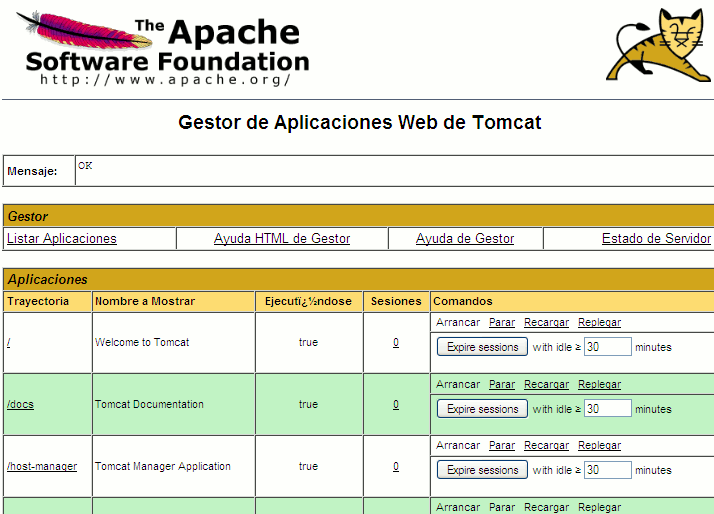
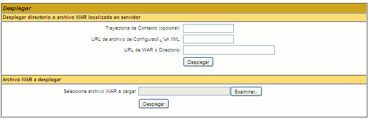

Protocolo HTTP. Introducción a las aplicaciones web JavaEE
Protocolo HTTP
El protocolo HTTP especifica el modo de comunicación entre una máquina cliente y una máquina servidor, de modo que el cliente solicita un documento del espacio de direcciones del servidor, y éste se lo sirve.
HTTP es un protocolo que no tiene estado: un cliente realiza una petición al servidor, que contesta y la transacción acaba, con lo que en la siguiente petición que pueda realizar el mismo cliente se deben proporcionar de nuevo todos los datos necesarios para que el servidor sirva correctamente la nueva petición, no habiendo ninguna relación entre las peticiones.
Peticiones del cliente
En el protocolo HTTP el cliente realiza una petición que se descompone en:
-
Un comando HTTP, seguido de una dirección de documento o URI (Uniform Resource Identifier), y un número de versión HTTP, de forma que se tiene una línea con el formato:
Comando URI Protocolo
Por ejemplo:
GET /index.html HTTP/1.1
-
Tras la petición, el cliente puede enviar información adicional de cabeceras (headers) con las que se da al servidor más información sobre la petición (tipo de software que ejecuta el cliente, tipo de contenido (content-type) que entiende el cliente, etc). Esta información puede utilizarla el servidor para generar la respuesta apropiada. Las cabeceras se envían una por línea, donde cada una tiene el formato:
Clave: Valor
Por ejemplo:
Accept-Encoding: gzip, deflate User-Agent: Mozilla/4.0 (compatible;MSIE5.0;Windows 98)
Tras las cabeceras, el cliente envía una línea en blanco (\r\n\r\n) para indicar el final de la sección de cabeceras.
- Finalmente, de forma opcional, se pueden enviar datos adicionales si el comando HTTP solicitado lo requiere (por ejemplo, el método POST que veremos a continuación).
METODO GET
El comando GET permitía al principio solicitar al servidor un documento estático, existente en su espacio de direcciones. Luego se vio que esto no era suficiente, y se introdujo la posibilidad de solicitar búsquedas al servidor, de forma que el documento no tuviera que ser necesariamente estático, sino que la búsqueda estuviera condicionada por unos determinados parámetros. Así, el comando GET tiene la forma:
GET direccion ? parametros version HTTP
Por ejemplo:
GET /cgi-bin/pagina.cgi?IDIOMA=C&MODELO=a+b HTTP/1.1
Los parámetros se indican con pares nombre=valor, separados por '&', y reciben el nombre de datos de formulario. El URI no puede contener espacios ni algunos caracteres, por lo que se utilizan códigos especiales, como el '+' para indicar espacio en blanco, u otros códigos %XX para representar otros caracteres. Uno de los trabajos más duros de los programas CGI es procesar esta cadena de parámetros para extraer la información necesaria.
OTROS METODOS
En la versión 1.1 de HTTP se definen otros métodos además de GET:
- OPTIONS: para consultar al servidor acerca de las funcionalidades que proporciona
- HEAD: el servidor responde de forma idéntica a un comando GET, pero no devuelve el cuerpo del documento respuesta, sólo las cabeceras. Suele emplearse para comprobar características del documento.
- POST: se emplea para enviar al servidor un bloque de datos en el cuerpo de la petición
- PUT: solicita que el cuerpo de la petición que envía se almacene en el espacio de direcciones del servidor, con el identificador URI solicitado (guarda un documento en el servidor)
- DELETE: solicita borrar un documento específico del servidor
- TRACE: se utiliza para seguir el camino de la petición por múltiples servidores y proxies (útil para depurar problemas de red).
GET Y POST
Los dos métodos más comúnmente usados son GET y POST. Veremos las diferencias entre uno y otro con un ejemplo:
-
Un ejemplo de petición GET es:
GET /dir/cargaPagina.php?id=21&nombre=Pepe HTTP/1.1 <cabeceras>
-
Este ejemplo, convertido a petición POST es:
POST /dir/cargaPagina.php HTTP/1.1 <cabeceras> id=21&nombre=Pepe
Vemos que los parámetros se pasan en el cuerpo de la petición, fuera de la línea del comando.
Comúnmente existen 3 formas de enviar una petición GET:
-
Teclear la petición directamente en la barra del navegador:
http://www.xx.com/pag.html?id=123&nombre=pepe
-
Colocar la petición en un enlace y pinchar el enlace para realizarla:
<a href="http://www.xx.com/pag.html?id=123&nombre=pepe">Pulsa Aqui</a>
-
Enviar la petición tras rellenar un formulario con METHOD=GET (o sin METHOD) con los dos parámetros a enviar:
<html> <body> <form action="http://www.xx.com/pag.html"> <input type="text" name="id" value="123"> <input type="text" name="nombre" value="pepe"> <input type="submit" value="Enviar"> </form> </body> </html>
Para enviar una petición POST, normalmente se utiliza un formulario con METHOD=POST:
<html> <body> <form action="http://www.xx.com/pag.html" METHOD=POST> <input type="text" name="id" value="123"> <input type="text" name="nombre" value="pepe"> <input type="submit" value="Enviar"> </form> </body> </html>
Respuestas del servidor
Las respuestas del servidor también tienen tres partes:
-
Una línea de estado con la versión del protocolo HTTP utilizado en el servidor, un código de estado y una breve descripción del mismo:
HTTP/1.0 200 OK
- Información de cabeceras, donde se envía al cliente información sobre el servidor y sobre el documento solicitado. El formato de estas cabeceras es el mismo que el visto para las peticiones del cliente, terminando en una línea en blanco.
- Finalmente, se envía el documento solicitado. Para marcar el final del mismo se envía también otra línea en blanco.
Cabeceras
Vamos a poder implementar programas que lean las cabeceras que envía un cliente (un navegador, por ejemplo) y que modifiquen el documento servido en función de dichas cabeceras (por ejemplo, enviar una página en función del idioma que se especifique). Por otra parte, podremos utilizar las cabeceras que envíe el servidor como respuesta para obligar al navegador a hacer determinadas acciones, como saltar a otra URL.
Veremos a continuación las cabeceras más comunes tanto en las peticiones de los clientes como en las respuestas de los servidores. La RFC donde se especifican estas cabeceras es la 2616.
CABECERAS DE PETICION (HTTP/1.1)
- Accept: Tipos MIME que puede manejar el cliente
- Accept-Charset: Conjunto de caracteres que el cliente puede manejar
- Accept-Encoding: Define si el navegador puede aceptar datos codificados
- Accept-Language: Idiomas aceptados
- Authorization: Para identificarse cuando se accede a páginas protegidas
- Cache-Control: Opciones relacionadas con el servidor proxy. Esta cabecera se llamaba Pragma en HTTP 1.0
- Connection: Define si el cliente es capaz de realizar conexiones persistentes (keep-alive, valor por defecto), o no (close). Nueva en HTTP 1.1
- Content-Length: Longitud de los datos enviados. Aplicable a peticiones POST
- Content-Type: Tipo MIME de los datos enviados. Aplicable a peticiones POST
- Cookie: Para las cookies que se manejen
- From: Dirección de correo electrónico responsable de la petición
- Host: Unica cabecera requerida por HTTP 1.1. Indica el host y el puerto tal y como se especifica en la URL original.
- If-Modified-Since: El cliente sólo desea el documento si ha sido modificado después de la fecha indicada en esta cabecera.
- Referer: URL origen de la petición. Si estamos en la página 1 y pinchamos en un enlace a la página 2, la URL de la página 1 se incluye en esta cabecera cuando se realiza la petición de la página 2.
- User-Agent: Cliente que está realizando la petición (normalmente muestra datos del navegador, como nombre, etc).
CABECERAS DE RESPUESTA
- Allow: Métodos disponibles (GET, POST, etc) a los que puede responder el recurso que se está solicitando
-
Cache-Control: Dice al cliente en qué circunstancias puede hacer una caché del documento que está sirviendo:
- public: el documento puede almacenarse en una caché
- private: el documento es para un solo usuario y sólo puede almacenarse en una caché privada (no compartida)
- no-cache: el documento nunca debe ser almacenado en caché
- no-store: el documento no debe almacenarse en caché ni almacenarse localmente de forma temporal en el disco duro
- must-revalidate: el cliente debe revalidar la copia del documento con el servidor original, no con servidores proxy intermedios, cada vez que se use
- max-age=xxx: el documento debe considerarse caducado después de xxx segundos.
Esta cabecera se llamaba Pragma en HTTP 1.0
- Content-Encoding: Tipo de compresión (gzip, etc) en que se devuelve el documento solicitado
- Content-Language: Idioma en que está escrito el documento. En la RFC 1766 están los idiomas disponibles
- Content-Length: Número de bytes de la respuesta
- Content-MD5: Una forma de fijar el checksum (verificación de integridad) del documento enviado
- Content-Type: Tipo MIME de la respuesta
- Date: Hora y fecha, en formato GMT, en que la respuesta ha sido generada
- Expires: Hora y fecha, en formato GMT, en que la respuesta debe considerarse caducada
- Last-Modified: Fecha en que el documento servido se modificó por última vez. Con esto, el documento se sirve sólo si su Last-Modified es mayor que la fecha indicada en el If-Modified-Since de la cabecera del cliente.
- Location: Indica la nueva URL donde encontrar el documento. Debe usarse con un código de estado de tipo 300. El navegador se redirigirá automáticamente a la dirección indicada en esta cabecera.
-
Refresh: Indica al cliente que debe recargar la página después de los segundos especificados. También puede indicarse la dirección de la página a cargar después de los segundos indicados:
Refresh: 5; URL=http://www.unapagina.com
- Set-Cookie: Especifica una cookie asociada a la página
- WWW-Authenticate: Tipo de autorización y dominio que debería indicar el cliente en su cabecera Authorization.
Para colocar estas cabeceras en un documento se tienen varios métodos, dependiendo de cómo estemos tratando las páginas (mediante servlets, HTML, etc). Por ejemplo, con HTML podemos enviar cabeceras mediante etiquetas META en la cabecera (<HEAD>) de la página HTML:
<META HTTP-EQUIV="Cabecera" CONTENT="Valor">
Por ejemplo:
<META HTTP-EQUIV="Location" CONTENT="http://www.unapagina.com">
Códigos de estado
El código de estado que un servidor devuelve a un cliente en una petición indica el resultado de dicha petición. Se tiene una descripción completa de los mismos en el RFC 2616. Están agrupados en 5 categorías:
- 100 - 199: códigos de información, indicando que el cliente debe responder con alguna otra acción.
- 200 - 299: códigos de aceptación de petición. Por ejemplo:
| 200 | OK | Todo está bien |
| 204 | No Content | No hay documento nuevo |
- 300 - 399: códigos de redirección. Indican que el documento solicitado ha sido movido a otra URL. Por ejemplo:
| 301 | Moved Permanently | El documento está en otro lugar, indicado en la cabecera Location |
| 302 | Found | Como el anterior, pero la nueva URL es temporal, no permanente. |
| 304 | Not Modified | El documento pedido no ha sufrido cambios con respecto al actual (para cabeceras If-Modified-Since) |
- 400 - 499: códigos de error del cliente. Por ejemplo:
| 400 | Bad Request | Mala sintaxis en la petición |
| 401 | Unauthorized | El cliente no tiene permiso para acceder a la página. Se debería devolver una cabecera WWW-Authenticate para que el usuario introduzca login y password |
| 403 | Forbidden | El recurso no está disponible |
| 404 | Not Found | No se pudo encontrar el recurso |
| 408 | Request Timeout | El cliente tarda demasiado en enviar la petición |
- 500 - 599: códigos de error del servidor. Por ejemplo:
| 500 | Internal Server Error | Error en el servidor |
| 501 | Not Implemented | El servidor no soporta la petición realizada |
| 504 | Gateway Timeout | Usado por servidores que actúan como proxies o gateways, indica que el servidor no obtuvo una respuesta a tiempo de un servidor remoto |
Cookies
Las cookies son un mecanismo general mediante el que los programas de un servidor web pueden almacenar información en la parte del cliente de la conexión. Es una forma de añadir estado a las conexiones HTTP, aunque el manejo de cookies no es parte del protocolo HTTP, pero es soportado por la mayoría de los clientes.
Las cookies son objetos de tipo: nombre = valor, donde se asigna un valor determinado (una cadena de texto) a una variable del nombre indicado. Dicho objeto es almacenado y recordado por el servidor web y el navegador durante un período de tiempo (indicado como un parámetro interno de la propia cookie). Así, se puede tener una lista de cookies con distintas variables y distintos valores, para almacenar información relevante para cada usuario (se tienen listas de cookies independientes para cada usuario).
El funcionamiento es: el servidor, con la cabecera Set-Cookie, envía al cliente información de estado que éste almacenará. Entre la información se encuentra la descripción de los rangos de URLs para los que este estado es válido, de forma que para cualquier petición HTTP a alguna de esas URLs el cliente incluirá esa información de estado, utilizando la cabecera Cookie.
La sintaxis de la cabecera Set-Cookie es:
Set-Cookie: CLAVE1=VALOR1;...;CLAVEN=VALORN [OPCIONES]
donde OPCIONES es una lista opcional con cualquiera de estos atributos:
expires=FECHA;path=PATH;domain=DOMINIO;secure
- Las parejas de CLAVE y VALOR representan la información almacenada en la cookie
- Los atributos domain y path definen las URL en las que el navegador mostrará la cookie. domain es por defecto el hostname del servidor. El navegador mostrará la cookie cuando acceda a una URL que se empareje correctamente con ambos atributos. Por ejemplo, un atributo domain="eps.ua.es" hará que el navegador muestra la cookie cuando acceda a cualquier URL terminada en "eps.ua.es". path funciona de forma similar, pero con la parte del path de la URL. Por ejemplo, el path "/foo" hará que el navegador muestre la cookie en todas las URLs que comiencen por "/foo".
-
expires define la fecha a partir de la cual la cookie caduca. La fecha se indica en formato GMT, separando los elementos de la fecha por guiones. Por ejemplo:
expires=Wed, 09-Nov-1999 23:12:40 GMT
- secure hará que la cookie sólo se transmita si el canal de comunicación es seguro (tipo de conexión HTTPS).
Por otra parte, cuando el cliente solicita una URL que empareja con el dominio y path de alguna cookie, envía la cabecera:
Cookie: CLAVE1=VALOR1;CLAVE2=VALOR2;...;CLAVEN=VALORN
El número máximo de cookies que está garantizado que acepte cualquier navegador es de 300, con un máximo de 20 por cada servidor o dominio. El tamaño máximo de una cookie es de 4096 bytes.
Autentificaciones
Veremos ahora algunos mecanismos que pueden emplearse con HTTP para autentificar (validar) al usuario que intenta acceder a un determinado recurso.
Autentificaciones elementales
El protocolo HTTP incorpora un mecanismo de autentificación básico (basic) basado en cabeceras de autentificación para solicitar datos del usuario (el servidor) y para enviar los datos del usuario (el cliente), de forma que comprobando la exactitud de los datos se permitirá o no al usuario acceder a los recursos. Esta autentificación no proporciona confidencialidad ni integridad, sólo se emplea una codificación Base64.
Una variante de esto es la autentificación digest, donde, en lugar de transmitir el password por la red, se emplea un password codificado. Dicha codificación se realiza tomando el login, password, URI, método HTTP y un valor generado aleatoriamente, y todo ello se combina utilizando el método de encriptado MD5, muy seguro. De este modo, ambas partes de la comunicación conocen el password, y a partir de él pueden comprobar si los datos enviados son correctos. Sin embargo, algunos servidores no soportan este tipo de autentificación.
Certificados digitales y SSL
Las aplicaciones reales pueden requerir un nivel de seguridad mayor que el proporcionado por las autentificaciones basic o digest. También pueden requerir confidencialidad e integridad aseguradas. Todo esto se consigue mediante los certificados digitales.
-
Criptografía de clave pública:La clave de los certificados digitales reside en la criptografía de clave pública, mediante la cual cada participante en el proceso tiene dos claves, que le permiten encriptar y desencriptar la información. Una es la clave pública, que se distribuye libremente. La otra es la clave privada, que se mantiene secreta. Este par de claves es asimétrico, es decir, una clave sirve para desencriptar algo codificado con la otra. Por ejemplo, supongamos que A quiere enviar datos encriptados a B. Para ello, hay dos posibilidades:
- A toma la clave pública de B, codifica con ella los datos y se los envía. Luego B utiliza su clave privada (que sólo él conoce) para desencriptar los datos.
- A toma su clave privada, codifica los datos y se los envía a B, que toma la clave pública de A para descodificarlos. Con esto, B sabe que A es el remitente de los datos.
El encriptado con clave pública se basa normalmente en el algoritmo RSA, que emplea números primos grandes para obtener un par de claves asimétricas. Las claves pueden darse con varias longitudes; así, son comunes claves de 1024 o 2048 bits.
-
Certificados digitales: Lógicamente, no es práctico teclear las claves del sistema de clave pública, pues son muy largas. Lo que se hace en su lugar es almacenar estas claves en disco en forma de certificados digitales. Estos certificados pueden cargarse por muchas aplicaciones (servidores web, navegadores, gestores de correo, etc).
Notar que con este sistema se garantiza la confidencialidad (porque los datos van encriptados), y la integridad (porque si los datos se desencriptan bien, indica que son correctos). Sin embargo, no proporciona autentificación (B no sabe que los datos se los ha enviado A), a menos que A utilice su clave privada para encriptar los datos, y luego B utilice la clave pública de A para desencriptarlos. Así, B descodifica primero el mensaje con su clave privada, y luego con la pública de A. Si el proceso tiene éxito, los datos se sabe que han sido enviados por A, porque sólo A conoce su clave privada.
-
SSL: SSL (Secure Socket Layer) es una capa situada entre el protocolo a nivel de aplicación (HTTP, en este caso) y el protocolo a nivel de transporte (TCP/IP). Se encarga de gestionar la seguridad mediante criptografía de clave pública que encripta la comunicación entre cliente y servidor. La versión 2.0 de SSL (la primera mundialmente aceptada), proporciona autentificación en la parte del servidor, confidencialidad e integridad. Funciona como sigue:
- Un cliente se conecta a un lugar seguro utilizando el protocolo HTTPS (HTTP + SSL). Podemos detectar estos sitios porque las URLs comienzan con https://
- El servidor envía su clave pública al cliente.
- El navegador comprueba si la clave está firmada por un certificado de confianza. Si no es así, pregunta al cliente si quiere confiar en la clave proporcionada.
SSL 3.0 proporciona también soporte para certificados y autentificación del cliente. Funcionan de la misma forma que los explicados para el servidor, pero residiendo en el cliente.
Introducción a las aplicaciones web en Java
Qué es una aplicación web
Una aplicación web es una aplicación a la que accedemos mediante protocolo HTTP utilizando un navegador web. Hemos visto el protocolo HTTP, pero no cómo utilizarlo para implementar una aplicación.
Aplicaciones en el lado del servidor
En el lado del servidor, tenemos que conseguir que nuestro servidor HTTP sea capaz de ejecutar programas de aplicación que recojan los parámetros de peticiones del cliente, los procesen y devuelvan al servidor un documento que éste pasará a su vez al cliente.
Así, para el cliente el servidor no habrá hecho nada distinto a lo estipulado en el protocolo HTTP, pero el servidor podrá valerse de herramientas externas para procesar y servir la petición solicitada, pudiendo así no limitarse a servir páginas estáticas, sino utilizar otras aplicaciones (servlets, JSP, PHP, etc) para servir documentos con contenido dinámico.
Los programas de aplicación son típicamente programas que realizan consultas a bases de datos, procesan la información resultante y devuelven la salida al servidor, entre otras tareas.
Vamos a centrarnos en las aplicaciones web JavaEE, en las que los componentes dinámicos que recibirán las peticiones HTTP en el servidor serán los servlets y JSPs. Estos componentes podrán analizar esta petición y utilizar otros componentes Java para realizar las acciones necesarias (beans, EJBs, etc).
Aplicaciones en el lado del cliente
Se tienen muchas tecnologías relacionadas con extensiones del lado del cliente (entendiendo cliente como un navegador que interpreta código HTML). El código HTML es un código estático que sólo permite formatear la apariencia de una página y definir enlaces a otras páginas o URLs. Esto no es suficiente si queremos que el navegador realice funciones más complicadas: validar entradas de formularios, mostrar la evolución del precio de unas acciones, etc.
Para ampliar las funcionalidades del navegador (respetando el protocolo HTTP), se utilizan tecnologías como JavaScript, Applets, Flash, etc. Estas se basan en hacer que el navegador ejecute código que le pasa el servidor, bien embebido en documentos HTML (como es el caso de JavaScript), o bien mediante ficheros compilados multiplataforma (como es el caso de los Applets Java o los ficheros Flash).
Estructura de una aplicación web JavaEE
Una aplicación web JavaEE que utilice servlets o páginas JSP debe tener una estructura de ficheros y directorios determinada:
- En el directorio raíz de la aplicación se colocan las páginas HTML o JSP (podemos dividirlas también en directorios si queremos)
-
Colgando del directorio inicial de la aplicación, se tiene un directorio WEB-INF, que contiene la información Web relevante para la aplicación. Esta información se divide en:
- Fichero descriptor de despliegue de la aplicación: es el fichero descriptor de la aplicación web. Es un fichero XML (llamado web.xml) que contiene información genérica sobre la aplicación. Lo veremos con más detalle más adelante
- Subdirectorio classes: en él irán todas las clases Java utilizadas en la aplicación (ficheros .class), es decir, clases externas a la API de Java que se utilicen en las páginas JSP, servlets, etc. Las clases deberán mantener la estructura de paquetes, es decir, si queremos colocar la clase paquete1.subpaquete1.MiClase dentro de classes, se quedará almacenada en el directorio classes/paquete1/subpaquete1/MiClase.
- Subdirectorio lib: aquí colocaremos las clases Java que estén empaquetadas en ficheros JAR (es decir, colocaremos los ficheros JAR de nuestra aplicación Web, y las librerías ajenas a la API de JDK o de servlets y JSP que se necesiten)
- El resto de elementos de la aplicación (imágenes, etc), podemos estructurarlos como nos convenga.
Notar que se separan los ficheros .class de los ficheros JAR, colocando los primeros en el directorio classes y los segundos en lib.
Esta estructura estará contenida dentro de algún directorio, que será el directorio correspondiente a la aplicación Web, y que podremos, si lo hacemos convenientemente, copiar en el servidor que nos convenga. Es decir, cualquier servidor Web JavaEE soporta esta estructura en una aplicación Web, sólo tendremos que copiarla en el directorio adecuado de cada servidor.
Cada aplicación web JavaEE es un contexto, una unidad que comprende un conjunto de recursos, clases Java y su configuración. Cuando hablemos de contexto, nos estaremos refiriendo a la aplicación web en conjunto. Por ello utilizaremos indistintamente los términos aplicación web y contexto.
Rutas relativas al contexto
Cada contexto (aplicación web) instalado en el servidor tendrá asociado una ruta para acceder a él desde la web. Por ejemplo, podemos asociar nuestro contexto la ruta /aplic, de forma que accediendo a la siguiente URL:
http://localhost:8080/aplic/index.htm
Estaremos leyendo el recurso /index.htm de nuestro contexto.
Supongamos que tenemos alguna imagen o recurso al que queremos acceder desde otro, en nuestra aplicación Web. Por ejemplo, supongamos que colgando del directorio raíz de la aplicación tenemos la imagen miImagen.jpg dentro de la carpeta imagenes (es decir, imagenes/miImagen.jpg).
Podemos acceder a esta imagen de varias formas, aunque a veces podemos tener problemas con alguna, porque luego el contenedor Web tome la ruta relativa al lugar desde donde queremos cargar la imagen (o recurso, en general). Este problema lo podemos tener accediendo a elementos desde servlets, sobre todo.
Una solución para evitar esto es acceder a todos los elementos de la aplicación a partir de la ruta del contexto. Por ejemplo, si nuestro contexto tiene la ruta /aplic asociada, para acceder a la imagen desde una página HTML, pondríamos:
<img src="/aplic/imagenes/miImagen.jpg">
Empaquetamiento de aplicaciones web: ficheros WAR
Una forma de distribuir aplicaciones Web es empaquetar toda la aplicación (a partir de su directorio inicial) dentro de un fichero WAR (de forma parecida a como se hace con un TAR o un JAR), y distribuir dicho fichero. Podemos crear un fichero WAR de la misma forma que creamos un JAR, utilizando la herramienta JAR.
Estos ficheros WAR son un estándar de JavaEE, por lo que podremos utilizarlos en los diferentes servidores de aplicaciones JavaEE existentes.
Por ejemplo, si tenemos en el directorio web/ejemplo los siguientes ficheros:
web/ejemplo/ index.html WEB-INF/ web.xml classes/ ClaseServlet.class
Para crear la aplicación WAR se siguen los pasos:
-
Crear el WAR colocándonos en dicho directorio web/ejemplo y escribiendo:
jar cMvf ejemplo.war *
Las opciones c, v y f son para crear el WAR como un JAR comprimido normal. La opción M (mayúscula) es para que no se añada el fichero MANIFEST.
También es IMPORTANTE destacar que no debe haber subdirectorios desde la raíz de la aplicación, es decir, la estructura del fichero WAR debe ser:
index.html WEB-INF/ web.xml classes/ ClaseServlet.class
sin ningún subdirectorio previo (ni ejemplo/ ni web/ejemplo/ ni nada por el estilo).
- Copiar el fichero WAR al servidor web para poner en marcha la aplicación. Veremos esto con detalle en el siguiente apartado.
Despliegue de archivos WAR
Vamos a ver las diferentes formas de desplegar un archivo WAR en Tomcat. El empaquetamiento en archivos WAR es algo estándar, pero no así el proceso de despliegue, que es dependiente del servidor. No obstante, la mayoría de servidores JavaEE funcionan en este aspecto de modo similar: permiten desplegar las aplicaciones desde una consola de administración y también "dejando caer" el fichero en determinado directorio.
Copiar el .WAR a Tomcat
En Tomcat la forma más simple de desplegar un archivo .war consiste en "dejarlo caer" en el directorio webapps. Con la configuración por defecto, Tomcat examina periódicamente el directorio y si aparece en él algún archivo nuevo lo descomprime automáticamente en el directorio y "activa" la apicación en el servidor. Esto se conoce en Tomcat como autodeploy, y se puede desactivar en la configuración si así lo deseamos.
La URL por defecto para acceder a la aplicación será el nombre del .war. Es decir, que si nuestro fichero se llama ejemplo.war, Tomcat lo descomprimirá creando un subdirectorio llamado ejemplo y desde el navegador accederemos con URLs del tipo http://nombre_del_host:8080/ejemplo/...
Podemos eliminar una aplicación sin más que borrar el directorio donde tomcat la ha descomprimido.
La aplicación "manager" de Tomcat
Tomcat incluye una aplicación llamada manager, que nos permitirá desplegar y gestionar las aplicaciones web instaladas en el servidor en tiempo de ejecución. Con el manager podremos subir y desplegar una aplicación, ver la lista de aplicaciones desplegadas, y detener, recargar, reanudar o desinstalar estas aplicaciones.
El manager de Tomcat cuenta con una interfaz HTML desde la cual podremos desplegar aplicaciones y gestionar las aplicaciones instaladas. Para acceder a esta interfaz HTML del manager introduciremos la siguiente URL en cualquier navegador:
http://localhost:8080/manager/html
Nos pedirá usuario y password. Los autorizados para acceder a esta aplicación deben tener rol de manager. Las versiones de Tomcat existentes en el momento de imprimir estas páginas ya tienen asignado este rol al usuario admin.
En versiones antiguas de Tomcat no había un usuario con rol de manager creado por defecto, por tanto si usamos una de estas versiones tendremos que crearlo a mano. Para ello editaremos el fichero ${tomcat.home}/conf/tomcat-users.xml e introduciremos las siguientes líneas:
<role rolename="manager"/> <user username="admin" password="JavaEE" roles="manager"/>
Con esto ya podremos acceder al manager con nuestro usuario. En este caso el usuario tendrá el nombre admin y el password JavaEE.
Una vez accedamos al manager veremos una página como la que se muestra a continuación:

Aquí podemos ver las aplicaciones instaladas en el servidor y podemos gestionarlas. Podemos detener (Stop) las aplicaciones para que dejen de estar disponibles, pero sin borrarlas del servidor, y posteriormente reanudar su ejecución con Start. También podemos recargar las aplicaciones con Reload. Esto será útil cuando hayamos modificado la aplicación y queramos que Tomcat reconozca estos cambios, por ejemplo si hemos cambiado la configuración de la aplicación (web.xml) o hemos añadido o modificado clases Java. Por último, con Remove podremos desinstalar la aplicación del servidor. Al hacer esto se eliminarán todos los ficheros de la aplicación y ya no podrá reanudarse.
En la parte inferior de esta página encontramos los siguientes formularios:

Desde aquí podremos desplegar aplicaciones web en el servidor. Con el formulario superior podremos desplegar una aplicación que ya se encuentre en un directorio de la máquina en la que está el servidor.
Con el formulario inferior será muy sencillo desplegar una aplicación web. Simplemente necesitamos tener el fichero WAR de la aplicación en nuestra máquina. Pulsamos sobre Examinar... para buscar y seleccionar este fichero WAR, y una vez seleccionado pulsaremos sobre Desplegar para que suba y despliegue la aplicación al servidor web.